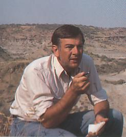

Biographien: Donald Johanson

Donald Johanson was born in Chicago in 1943, the son of Swedish immigrants. His father died when he was two, and his mother moved to Hartford, Connecticut, where he developed an interest in anthropology from a neighbour who taught the subject. Although he initially studied chemistry at university, he eventually switched majors to anthropology, and worked during summers on archeological digs. He transferred to Chicago to study under F. Clark Howell for his graduate studies, doing a comprehensive study on chimpanzee dentition for his doctoral thesis. In 1970 and 1971 he visited Africa to do field work at Omo in Ethiopia. In 1972, he and some colleagues went on a short exploratory expedition evaluate the Afar Triangle region of Ethiopia. They were impressed by its promise, and planned a full scale expedition the following year. Back in the USA, Johanson completed his Ph.D. and started a teaching position at Case Western Reserve University.Im Jahr 1973 entdeckte er AL 129-1, ein kleines, aber menschenähnliches Kniegelenk, und das erste Kniegelenk aus dem hominiden Fossilbericht. Im folgenden Jahr entdeckten Johanson und Tom Gray eine noch spektakulärere Fundstelle, AL 288-1, ein unvollständiges Skelett einer weiblichen Australopithecus, die besser unter ihrem Spitznamen Lucy bekannt ist. Im Jahr 1975 gab es noch einen weiteren bedeutenden Fund, als sein Team eine Sammlung von Fossilien an einer einzigen Stelle entdeckte, die den Spitznamen First Family erhielt. Im Jahr 1976 wurden weitere hominide Fossilien entdeckt, zusammen mit Steinwerkzeugen, die mit 2,5 Millionen Jahren die ältesten der Welt waren. Nach 1976 verhinderten politische Verhältnisse in Äthiopien weitere Expeditionen für fast 15 Jahre.
Johanson, der 1974 Kurator am Cleveland Museum of Natural History geworden war, unternahm nun gemeinsam mit Tim White, einem jungen, aber hochangesehenen Wissenschaftler, der gerade sein Ph.D. abgeschlossen hatte, die Aufgabe, die Fossilien zu analysieren. Johanson war ursprünglich der Meinung, dass die Hadar-Fossilien eine Mischung aus Homo- und Australopithecus-Exemplaren darstellten, doch White überzeugte ihn schließlich, dass alle zu einer einzigen Spezies gehörten. Im Jahr 1978 benannten sie diese Spezies Australopithecus afarensis.
Im Jahr 1981 gründete Johanson das Institute of Human Origins, eine gemeinnützige Forschungseinrichtung, die sich der Erforschung der Vorgeschichte widmet. Im Jahr 1987 erhielt das IHO die Genehmigung, eine Expedition in die Olduvai-Schlucht in Tansania durchzuführen, und fand einen unvollständigen Skelettrest, OH 62, der allgemein Homo habilis zugeordnet wird. Seit 1990 hat das IHO die Ausgrabungen in Äthiopien wieder aufgenommen und weitere A. afarensis-Fossilien gefunden. Das bisher wichtigste ist ein Fossil-Schädel, AL 444-2. Im Jahr 1997 zog das IHO von Berkeley nach Arizona und wurde an die Arizona State University angeschlossen.
Referenzen
Johanson D.C. and Edey M.A. (1981): Lucy: the beginnings of humankind. New York: Simon and Schuster. (a short history of paleoanthropology, and the discovery and analysis of Australopithecus afarensis)Johanson D.C. und Shreeve J. (1989): Lucys Kind: Die Entdeckung eines menschlichen Vorfahren. New York: Early Man Publishing, Inc.
Annonline-Material zu Donald Johanson
Auf der Suche nach den Ursprüngen des Menschen, Teil I (Teil II, Teil III), mit Don Johanson
Diese Seite ist Teil des FAQ zu fossilen Menschenaffen im TalkOrigins-Archiv.
Startseite |
Arten |
Fossilien |
Kreationismus |
Lektüre |
Referenzen
Illustrationen |
Neuigkeiten |
Feedback |
Suche |
Links |
Fiktion
http://www.talkorigins.org/faqs/homs/djohanson.html, 04/24/98
Copyright © Jim Foley
|| E-Mail mir